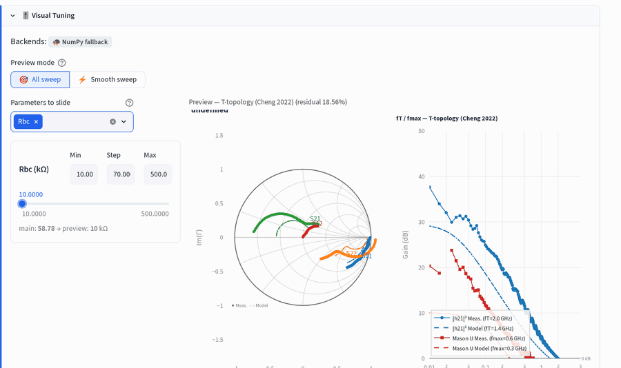
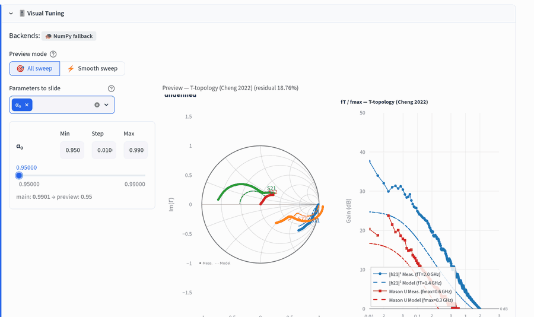
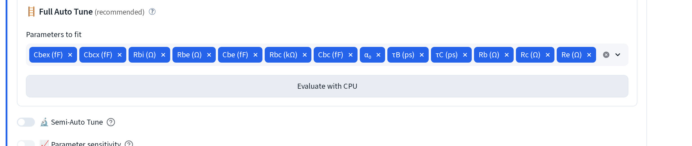
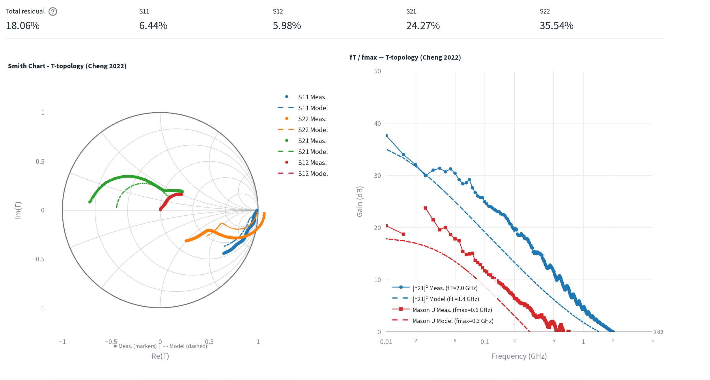
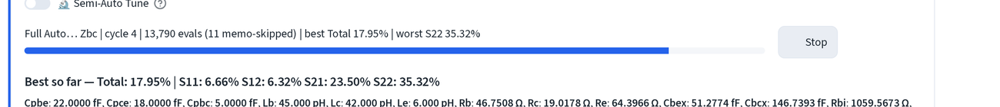
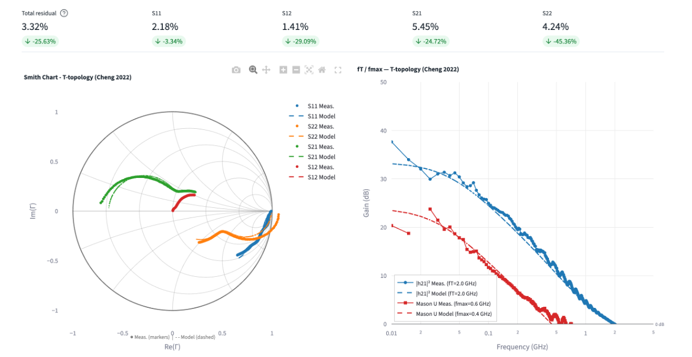
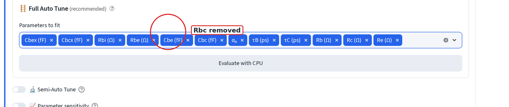

Visual & auto tuning¶
Both live inside the Fine-tune expander that appears once you're in fit mode, a measured device loaded and a model chip selected. Adjust parameters by hand with a slider, or let a tuner search for you.
Everything below starts from the model the extraction walkthrough produces,
loaded against the raw (not de-embedded) measurement so the pad and lead
parasitics have something to work against. τB and τC should be the
transit-time-fit values, not Cheng's analytic split, as
the fine-tune page explains. If your starting residual
is in the hundreds of percent, the model has not been loaded: check the
📌 cache from … chip next to the device name, or hand the device over from
Extraction again.
1. Visual Tuning, slider-driven preview¶
- Open 🎯 Visual Tuning, then pick one or more parameters under Parameters to slide. Each gets its own Min/Step/Max row and a slider.
- Drag the slider. The preview Smith chart, the residual in the preview title, and the fT/fmax panel all update as you move it, nothing else on the page changes until you commit the value.

Rbc swept across its range. The
main: … → preview: … line under the slider shows the value live in
Fine-tune against the one you're previewing; nothing is written back
until you accept it. Watch S12 (red) and S22 (orange): at the bottom of the
range the base-collector shunt pulls both away from the measurement and the
residual rises.

α₀'s Min/Step/Max is clamped to a sane range no matter what you type, so it can't be pushed past 1. α₀ moves S21 and the |h21|² roll-off together.
Two modes sit above the parameter picker:
- 🎯 All sweep: every drag simulates a fresh point. Exact, but only as smooth as the app round-trip.
- ⚡ Smooth sweep: precomputes the whole sweep up front so scrubbing is smooth. Use it for a parameter you want to drag back and forth repeatedly.
2. Auto Tuning, one click¶
Open Auto Tuning for Minimum Residuals → 🪜 Full Auto Tune (recommended). Parameters to fit defaults to every canonical parameter, Cpbe/Cpce/Cpbc and Lb/Lc/Le (the parasitic pad/lead group) start unselected, because those come from open/short de-embedding, not from fitting the intrinsic device.

Click Evaluate with CPU. The sticky residual row and the Smith/fT-fmax charts above show where you started:

The search is coarse-to-fine and does not block the page. The button turns into ⏹ Stop and a live Best so far line updates every cycle until you stop it or it hits its step floor:

The Best so far line prints every parameter, so you can see what actually moved. Starting from a sound analytic extraction, auto tuning polishes rather than rescues. A parameter that runs off to an absurd value is telling you the fit is insensitive to it, not that the device really is like that.
Press ⏹ Stop whenever the residual is good enough, then 🏆 Use best values to write the best row back into Fine-tune. The residual row and the main charts redraw against the committed values:

Semi-Auto Tune (brute-force / optimized / prioritized grid sweeps) sits below Full Auto Tune for when you want to control the search box or metric by hand instead of the one-click default, not covered here.
Pin a parameter instead of fitting it¶
Rbc and α_0 are in scope by default. They control where the fT/fmax gains (dB) are, especially at low frequencies in the bode plot. Since the auto-tuning function only optimizes the residual, the simulated fT/fmax traces might not fit the experimental one at low frequency. Therefore, it is best to exclude these two from auto-fitting, after you have chosen the Rbc/α_0 values that best reflect the starting gains (dB). To do that, take them out of the search and hold it at your intended value:
Open Parameters to fit. Each selected parameter is its own tag with its own delete icon. Click the × on the Rbc (kΩ) tag to remove it.

Rbc drops out of the search box. It keeps your selected value and is simply not searched. Running the tuner again with Rbc pinned costs almost nothing on the residual and keeps the model physical.
Next: chart controls · back to simulation & fitting.